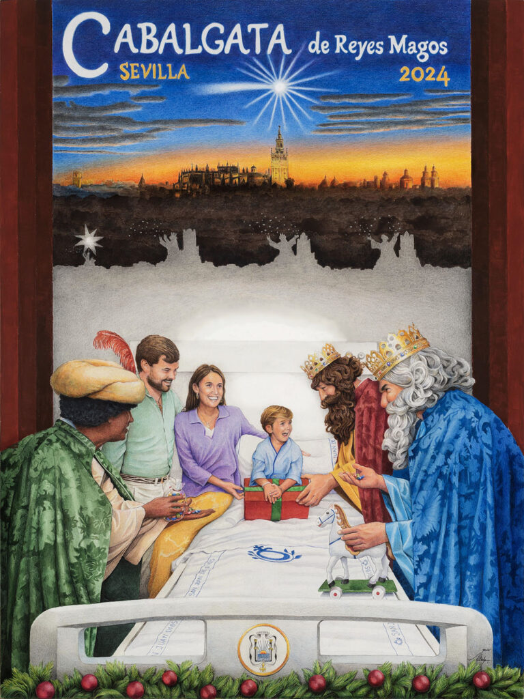

La Cabalgata de Reyes Magos constituye desde su creación una de las actividades más importantes del Ateneo de Sevilla, cuyo aspecto festivo de marcado carácter social, forma parte desde entonces de la intrahistoria de una ciudad de fuertes convicciones religiosas, a las que gusta exteriorizar mediante manifestaciones artísticas populares.
El sentido unívoco del mensaje evangélico con la Cabalgata le confiere a ésta su inalterabilidad a lo largo de sus años de existencia, lo que se traduce en una inmutable iconología, pese a la natural evolución de los gustos estéticos en los diseños, las nuevas formas de expresión y la renovación de los materiales empleados.
La mágica realidad de la Cabalgata tiene tres protagonistas indiscutibles: la ciudad, marco de la fiesta; el Ateneo, la noble y docta institución que la hace posible y, finalmente, un puñado de personas que le han dado vida y emocionante ilusión. Entre estas últimas, citaremos a los artistas, los verdaderos creadores de la originalidad, el buen gusto y la fantasía. También están detrás de la Cabalgata otras muchas personas, conocidas unas, anónimas otras.
Es de justicia resaltar entre estas últimas, a tres hombres de bien que han sabido configurar con su singular personalidad a través de otras tantas épocas, el ser espiritual de la Cabalgata en la esencia filantrópica del Ateneo: José María Izquierdo, José Jesús García Díaz y Antonio Hermosilla, tres hombres ilustres y un destino común: la cultura al servicio de los ideales más nobles, más fértiles, de su apasionada ciudad
